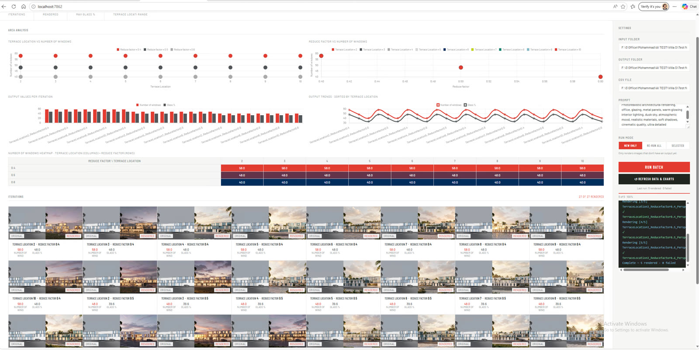
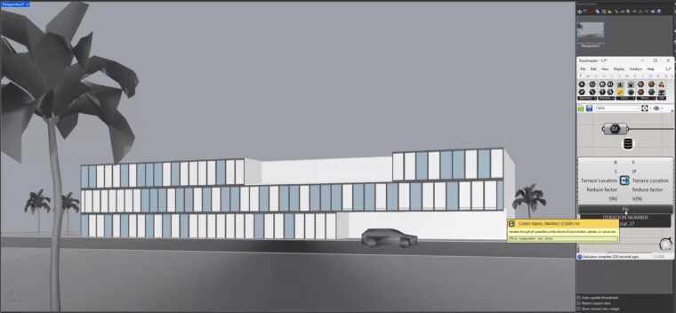
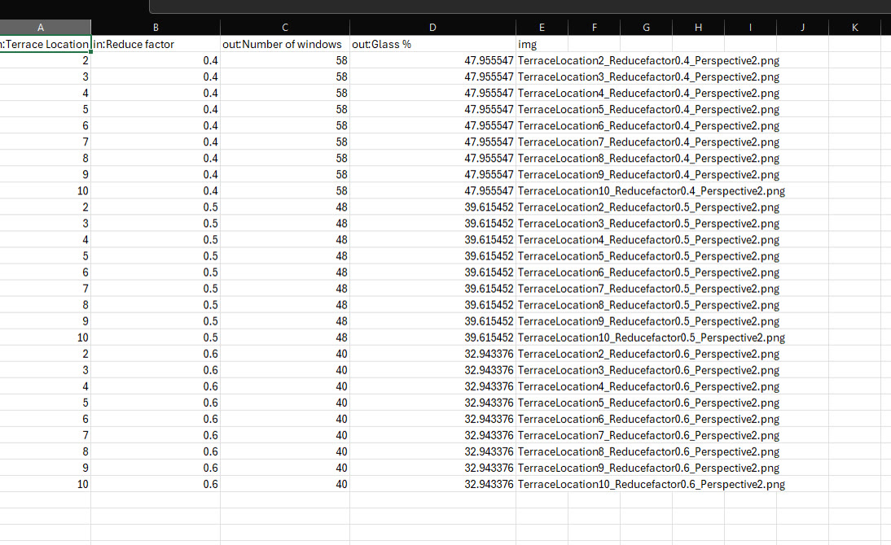
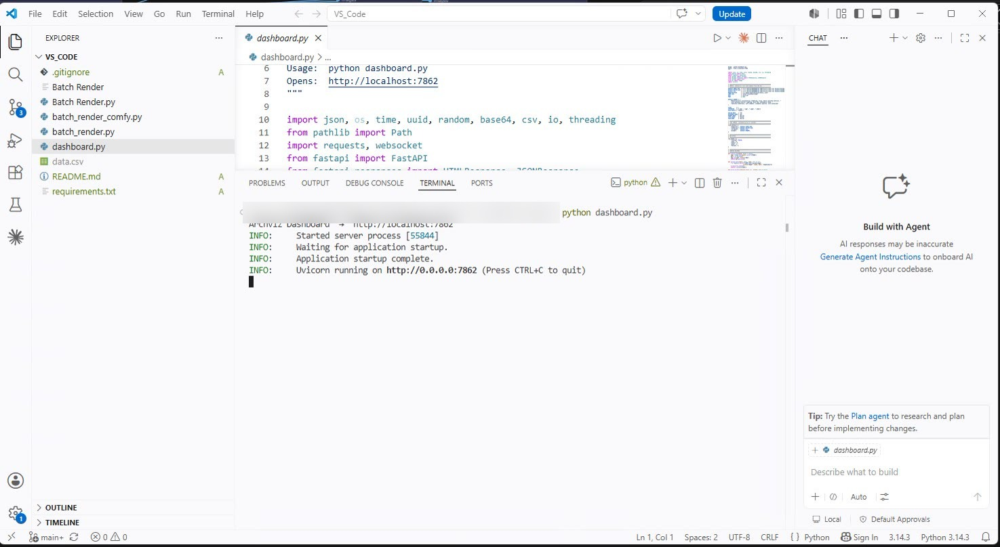
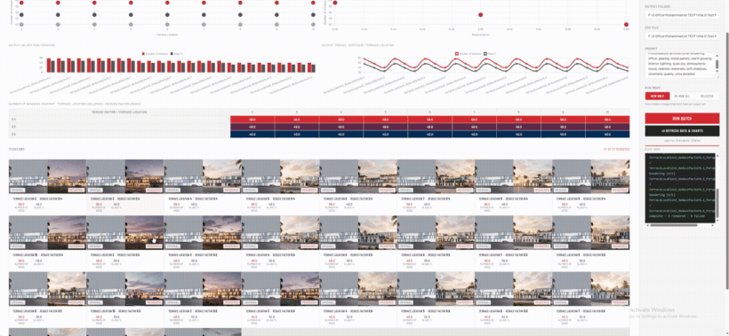
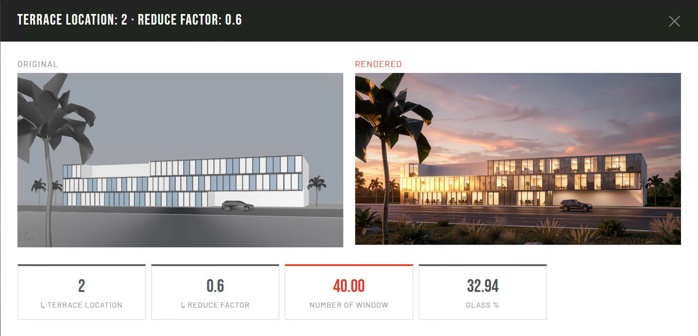
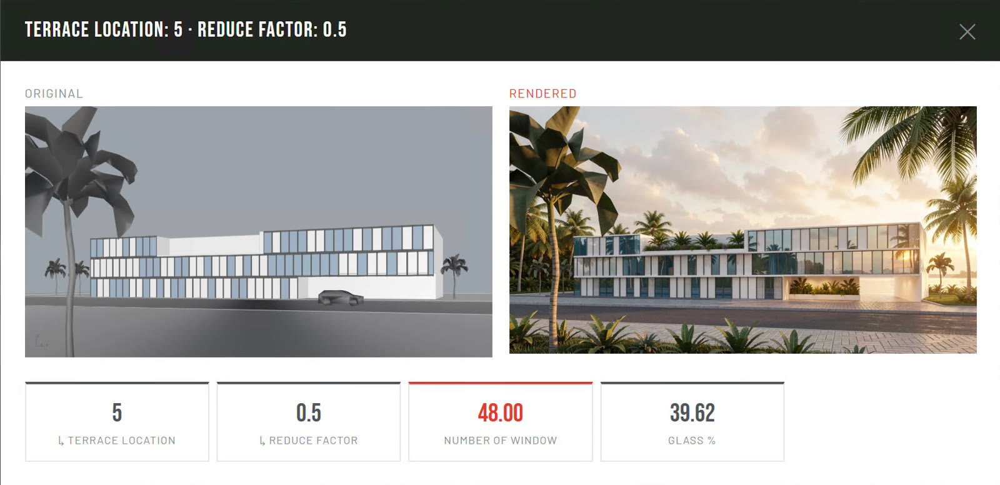

The bottleneck in early-stage design is rarely a shortage of ideas—it is the cost of testing them. Asking how façade rhythm, terrace placement, or window count change a building usually means rebuilding the model and re-rendering each option by hand, so exploration stops long before the design space is exhausted.
Smart Iteration automates the entire loop. A parametric Grasshopper model sweeps the variables and exports a perspective plus a row of metrics for every combination. Each raw option is rendered photoreal through a ComfyUI batch, unattended, and the results are gathered into a live dashboard—charted, compared, and selectable—turning hundreds of variants into a single browsable surface.

Every option in one place. Scatter plots map performance across the parameter space, bar and line charts track window count and glass percentage, and the grid below holds the full set of rendered iterations—each one clickable for a closer look.

LiveA single Grasshopper definition drives the building—panel count, reduce factor, and terrace position are exposed as inputs. As the parameters step through their ranges the model rebuilds itself, each frame a distinct option captured as a perspective for rendering.

Each iteration becomes a row: the input parameters on the left, the computed outputs—number of windows and glass percentage—in the middle, and the matching image filename on the right, the link that ties every metric back to its render.

A FastAPI service orchestrates the run—reading the CSV, dispatching each perspective to a ComfyUI render pass, and serving the results to the dashboard at localhost. The whole batch runs unattended.

LiveThe dashboard fills as renders complete, then any option can be opened for a side-by-side of its raw model view and the finished render—turning a long batch into a fast, visual decision.


Two options drawn from the same sweep, compared by the factors that drive the iterations—number of windows and glazing percentage. The raw model view sits beside its photoreal render, with those metrics read out beneath each one.